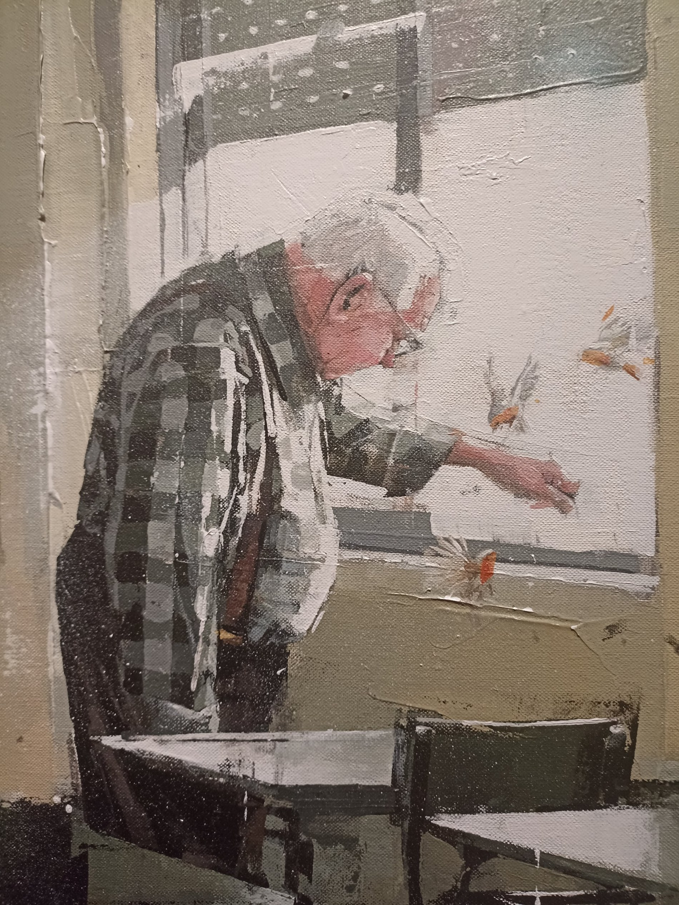
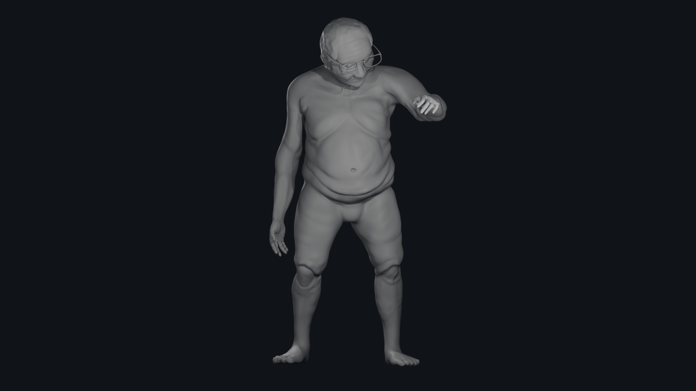
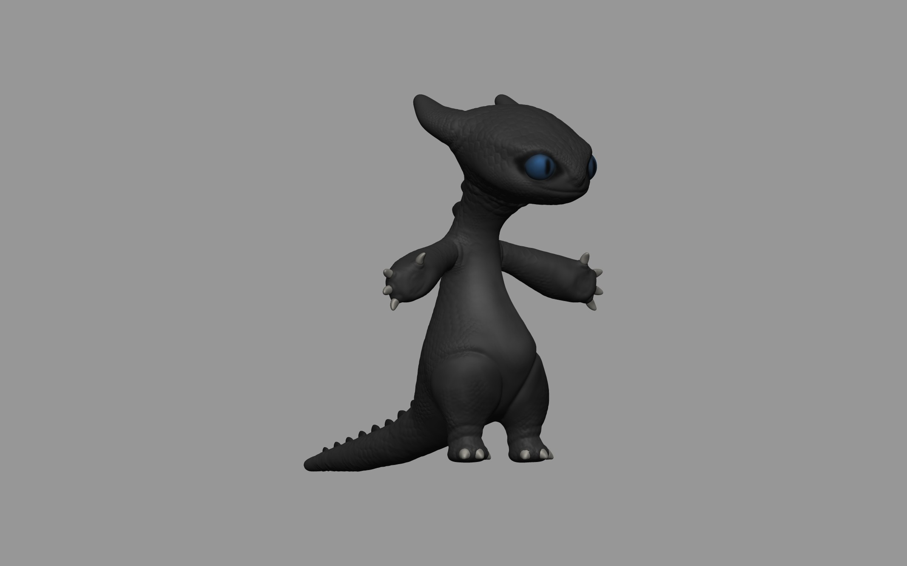
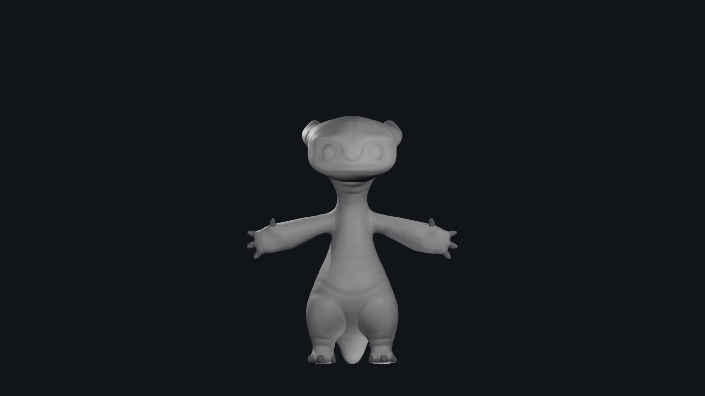

3D Environments & Scenes
Unreal Journey
Unreal Engine
A sci-fi short film following a space traveler who explores three corners of Earth, a forest, an island and a desert, before deciding where to land. Each location has its own atmosphere and identity, brought together in a single cinematic journey created with Unreal Engine.
My role: Environment setup & final video


Gaming Dog
Blender
A playful low-poly cartoon scene of a dog playing video games in his bedroom.
My role: Modeling, texturing & lighting


3D Characters & Models
Carl
ZBrush
3D model of the elderly man from the artwork Carl by Haitz de Diego.
My role: Modeling


Creature
ZBrush
3D model of a creature based on Toothless from How to Train Your Dragon.
My role: Modeling


Games · 3D Art
Moles Defense
Blender · Unity
A tower defense game set on a circular map. Waves of moles burst out of the center and advance toward the outer barrier, and the player must place their defenses strategically to hold them back and survive.
My role: Modeling, texturing & animation of the moles, plus scene setup


Murder By Death
Blender · Unity
A murder mystery set in 1930s England and released on Steam. Inside a mansion, players investigate the crime, interrogate the suspects and make key decisions to uncover the truth before Scotland Yard arrives.
My role: Modeling of assets, room setup & narrative design support


Games · Development
Land Between Rivers
Unity · Blender
A third-person exploration and puzzle demo set in an archaeological museum dedicated to Mesopotamia. The player wanders the galleries, examines the exhibited pieces and solves puzzles along the way.
My role: Modeling, texturing, scene setup, lighting, narrative, UI design & programming


Borealis
Unreal Engine · Blender · ZBrush
An immersive first-person PC experience in which the player journeys through different worlds, collecting colored prisms to restore the aurora borealis to the sky.
My role: Scene setup & gameplay mechanics programming


Ghosts' Whispers
GDevelop · Photoshop
A pixel art mystery game built around puzzle solving, where the player pieces together clues to move forward.
My role: Gameplay mechanics programming